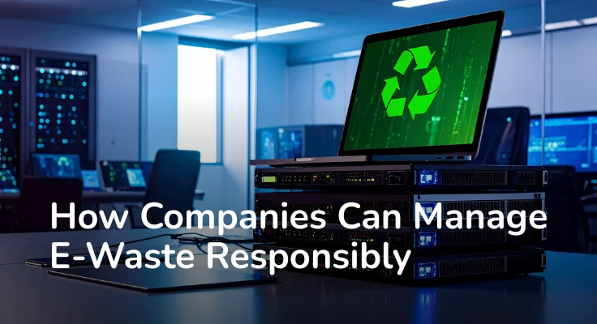

Technology is at the center of modern business. Every company depends on devices to operate, communicate, and grow. Laptops support daily work. Servers store critical data. Mobile devices keep teams connected.
But technology is temporary. Devices age. Systems become slow. Hardware is replaced to maintain efficiency and security. What remains is electronic waste, and for companies, this waste builds faster than expected.
Managing e-waste responsibly is no longer just an environmental concern. It is part of running a secure, efficient, and responsible business. For companies operating in Bangalore, Hyderabad, and Chennai, where technology adoption is high and device turnover is rapid, a structured approach to corporate e-waste management is essential.
Every upgrade creates waste. Old laptops, unused monitors, damaged hard drives, and expired batteries accumulate over time. Many companies in Bangalore, Hyderabad, and Chennai store these devices in storage rooms, unsure of what to do next.
Ignoring this waste creates long term problems. Devices continue to occupy space. Their materials remain unused. Some components slowly degrade and release harmful substances if left unmanaged.
Responsible e-waste management provides a clear solution. It ensures that outdated equipment is collected, processed, and handled in a controlled and safe manner. This prevents waste from accumulating and reduces environmental harm.
Electronic devices store valuable information. Client records, financial details, internal communication, and operational data remain inside storage drives even after a device stops working.
Simply deleting files does not remove data permanently. Without proper handling, sensitive information can be recovered. This is a critical risk for companies in tech hubs like Bangalore and Hyderabad, where data security is a top business priority.
Responsible e-waste management ensures secure data destruction. Storage devices are wiped using approved methods or physically destroyed when required. This prevents unauthorized access and protects the company from data breaches.
Data protection does not end when a device is discarded. It continues until the device is properly processed.
Electronic waste contains materials that can harm the environment if handled carelessly. Toxic elements can enter soil and water, affecting ecosystems and public health.
Companies generate larger volumes of e-waste than individuals. Their disposal practices have a greater impact. In cities like Chennai, Bangalore, and Hyderabad, responsible corporate e-waste disposal directly contributes to a cleaner urban environment.
Responsible e-waste management ensures that harmful materials are handled safely. Hazardous components are isolated, and useful materials are recovered. This reduces pollution and prevents unnecessary damage to the environment.
Proper disposal reflects responsible business practices and environmental awareness.
Many discarded devices still contain valuable materials. Metals such as copper, aluminum, and rare earth elements can be recovered and reused in manufacturing.
Some devices can also be refurbished and used again. This extends their life and reduces the demand for new resources.
E-waste management enables this recovery process. Instead of losing valuable materials, companies return them to productive use. This reduces waste and supports efficient resource use.
Responsible disposal creates environmental and economic value.
Businesses are expected to follow proper disposal practices for electronic waste. Failure to do so can create legal risks and damage credibility.
Working with authorized e-waste management providers like E2E Recycling ensures compliance with regulations. Devices are handled according to approved standards and processed responsibly. E2E Recycling is a CPCB-certified end-to-end recycler serving companies across Bangalore, Hyderabad, and Chennai.
This builds trust. Customers, partners, and stakeholders value companies that act responsibly. Proper e-waste management strengthens reputation and reflects long term thinking.
Technology will continue to evolve, and companies will continue to upgrade their systems. This makes e-waste an ongoing reality.
Managing it responsibly protects the environment, secures sensitive data, and ensures compliance. It also allows companies to recover value from unused equipment and maintain responsible operations.
Responsible e-waste management is not just about disposal. It is about managing technology with awareness and accountability. Companies in Bangalore, Hyderabad, and Chennai that recognize this responsibility contribute to a more sustainable and secure future.
If your company is ready to manage its e-waste responsibly, reach out to E2E Recycling today. We handle corporate e-waste collection, certified data destruction, and compliant recycling — across Bangalore, Hyderabad, and Chennai.